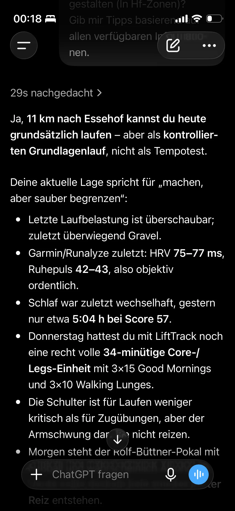
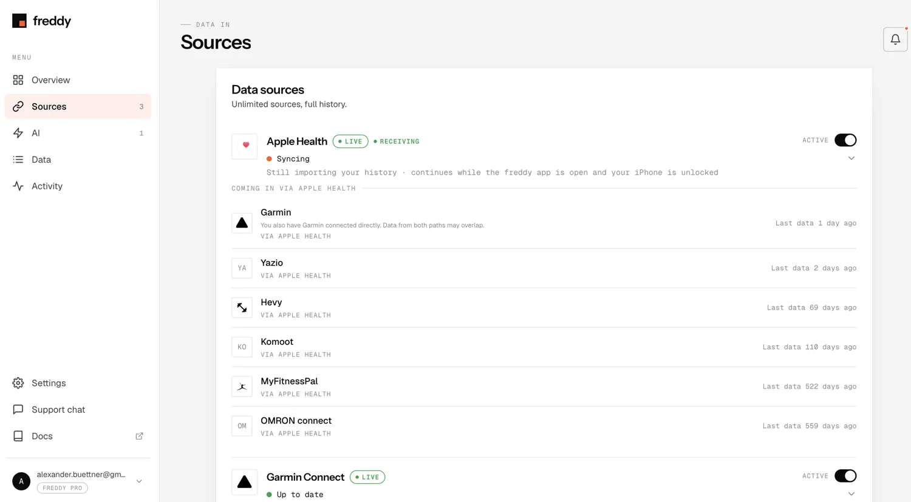
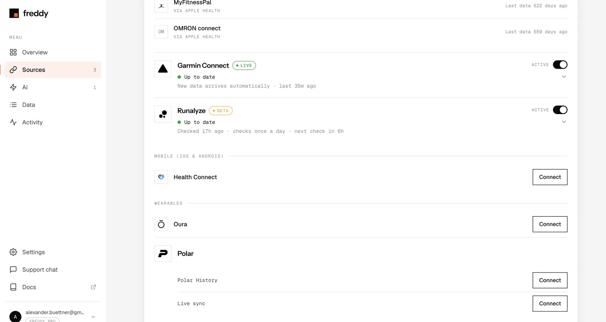
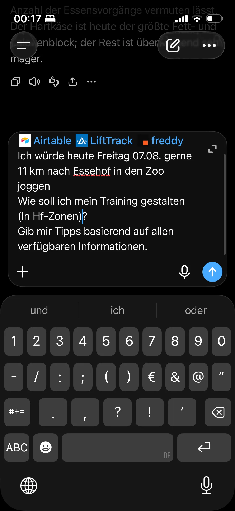

WHAT I DO
- Wear my devices
- Train normally
- Use the apps I already use
- Log things machines cannot know
- Ask ChatGPT normal questions
REAL-WORLD PERSONAL EXPERIMENT
Your data. One context. Better decisions.
I’m building a practical personal AI operating system around ChatGPT — connecting the data and context that normally live in separate apps and turning them into useful decisions in everyday life.
This is not another dashboard. The interesting part is what happens when fragmented data becomes shared context.

Recovery, training, nutrition, calendar, and subjective logs.
ChatGPT as the context and decision-support interface.
HOW IT WORKS
The point is not to spend more time managing data. It is to keep using normal tools, add a few important manual observations, and make the combined context available when a real question comes up.

WHAT I DO
WHAT HAPPENS IN THE BACKGROUND
Data and context from multiple sources become available to the AI context layer through a mix of sync, read-only access, intermediary services, and intentionally manual logging.
Not every connection is automatic. Not every system has clean write access. That is part of the actual design problem.
THEN
ChatGPT can reason across the combined context and help with real decisions instead of responding to one isolated metric or one app in a silo.
REAL USE CASES
These are practical examples of what becomes possible once multiple sources can be queried as one context instead of one screen at a time.
CASE STUDY 1
A planned workout cannot be evaluated from training data alone. The useful answer can depend on recent training, Garmin-derived recovery signals, subjective logs, alcohol or sleep context, calendar events, and real-life constraints such as an upcoming football match.
Key point: not another readiness score — a contextual decision.

CASE STUDY 2
The system can inspect LiftTrack workout and exercise context together with recovery and real-life constraints, then suggest concrete session changes.
Current missing link: AI may suggest changes that still need to be applied manually because write-back into LiftTrack is not guaranteed.
CASE STUDY 3
An iPhone Shortcut on the lock screen opens a persistent ChatGPT logging conversation. One tap can turn a quick voice note or typed observation into a structured long-term log.
Key point: manual logging only survives if friction is extremely low.
CASE STUDY 4
A meal can be sent as text, voice, or image. The AI can identify foods, estimate quantities where appropriate, preserve product-specific information, and place nutrition in longer-term context.
Key point: the goal is reconstructable context, not obsessive calorie tracking.
CASE STUDY 5
The same recovery or training data can lead to different recommendations depending on what is actually planned for the day. Calendar context becomes part of decision support instead of remaining a separate productivity silo.
CASE STUDY 6
Personal AI OS is not only about health analytics. Small pieces of context, easy access, and usable memory can also remove ordinary everyday friction when a simple decision depends on details spread across tools and prior notes.
CASE STUDY 7
Instead of giving a generic answer, the Personal AI Coach can combine Garmin and freddy recovery context, recent LiftTrack strength training, Airtable notes, and Google Calendar constraints before answering a simple question: should I run today, and if yes, what kind of run actually fits?
ChatGPT as the Personal AI Coach can then turn that combined context into one actionable recommendation: skip the run, keep it easy, or use the time for a specific session that matches today’s reality.


From fragmented health & training data to one actionable decision. Your data. One context. Better decisions.
UNDER THE HOOD
This is a practical architecture, not a perfectly unified platform. Some flows are automatic, some are manual, some are read-only, and some depend on third-party synchronization.
CAPTURE & APPS
CONTEXT & ACCESS LAYER
REASONING LAYER
SPECIAL WORKOUT FLOW
IMPORTANT FLOWS
Editing behavior, sync direction, and reliability can vary. This should not be mistaken for one flawless universal data model.
| Component | Role | How it is used here | Current reality |
|---|---|---|---|
| ChatGPT | Reasoning layer | Combines retrieved context with normal user questions | Useful for synthesis, but outputs still need judgment and verification |
| Airtable | Structured memory | Stores subjective/manual long-term logs | Strong for structure, but depends on good logging habits and schema decisions |
| LiftTrack | Training context | Provides workout templates, exercise details, and history where available | Helpful source, but AI write-back and sync behavior are not universally seamless |
| Garmin Connect + Garmin / Fenix 8 | Execution and signals | Captures workouts, recovery signals, and watch-based confirmations | Core source of real data, but sync chains and edits can break or behave differently |
| freddy | Aggregation/access layer | Exposes combined health, recovery, and training metrics from connected services | Useful abstraction layer, but only as complete as its upstream sources |
| Apple Health | Intermediary health layer | Acts as a shared route for compatible sources | Important connective tissue, not the single source of truth for everything |
| Drinklog | Manual event logging | Adds alcohol-related context when needed | Only valuable if it actually gets logged and propagated |
| Google Calendar | Life context | Adds schedule constraints to decisions | Changes recommendations without changing the underlying biometrics |
| iPhone Shortcuts | Low-friction input | Makes fast capture practical from the lock screen | Great for reducing friction, but still intentionally manual |



WHY THIS MATTERS
Their information already exists, but it is scattered across wearables, training apps, health platforms, calendars, notes, food logs, and their own head.
The Personal AI OS idea is to create a context layer above those silos so the useful question is no longer blocked by where the data happens to live.
The value isn’t another place to look at your data. It’s being able to ask a better question.
CURRENT STATUS
That is not a weakness to hide. It is the whole point of documenting a real personal AI workflow instead of pretending the ecosystem is already finished, standardized, or clean.
SAFETY / PRIVACY / DISCLAIMER